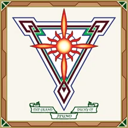
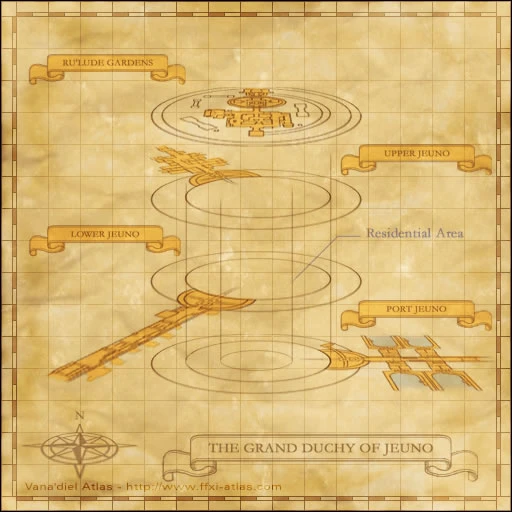

Cities
Additional level-75 reference




Jeuno Quests
Port Jeuno
Lower Jeuno
Upper Jeuno
Ru'Lude Gardens
A booming city-state built upon Heavens Bridge, a structure that allows passage between the Quon and Mindartia continents. Jeuno's national policy is one of neutral mercantilism, and is governed by a set of relatively loose regulations. This encourages a constant flow of traders of all races, from Hume shopkeepers to Goblin merchants, to visit this colorful, cosmopolitan town. Jeuno is also the only country to retain the ancient skills required to construct airships, which provides a rapid method of travel between nations.
At the time of the beastmen invasion several decades ago, this small nation took leadership of the countries of Vana'diel. Jeuno forged those countries into the Alliance of Altana, and succeeded in repelling the onslaught.
Culture
Due to its position as the gateway between Quon and Mindartia, Jeuno attracts a variety of travelers from across the world. Thanks to this Jeuno has developed a distinct culture fusing together aspects of the cultures of the varied citizenry together to create a an atmosphere unnlike anywhere else in Vana'diel.
Living Standards
Thanks to the economic policies of Archduke Kam'lanaut, Jeuno has become a center of commerce which provides all its residents with a high standard of living across the board.
Military Organization
Ducal Guard
The military force of Jeuno, the Ducal Guard, are police of the giant city. Originally hand-picked and trained by the Archduke himself a few years before the outbreak of the Crystal War the Ducal Guards are some of the finest warriors in Vana'diel. From commerce to industry, the guard regulate all commercial traffic in the city and watch over its citizens.
Armathrwn Society
A secret society of an unknown origin, membership, and purpose. Members of this group freely roam the city, but rarely speak to the public. Their purpose is seen as a mystery, but rumors circulate that they are responsible for much of Cid's knowledge in the arts of crafting and technology.
Adapted from Eden Wiki: Jeuno · Contributors and history · CC BY-SA 4.0. Revision 45576. Layout, links and optional background text adapted for Zenith.